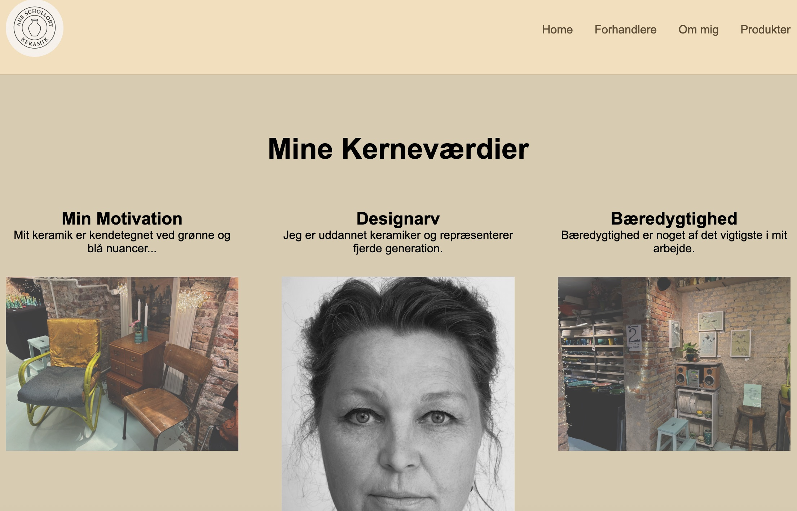

Grundlæggende Indhold

I Tema 5 arbejdede jeg med indholdsproduktion og formidling.
Fokus var på sammenhæng mellem tekst, billeder og målgruppe.
Her kan du se den digitale prototype, proces og kode, der ligger bag mit portfolio-site.
I Tema 2 arbejdede jeg med at opbygge mit første website ved hjælp af HTML og CSS. Jeg arbejdede mobile-first og tog udgangspunkt i wireframes og layoutdiagrammer.
Jeg lærte at strukturere indhold semantisk og bruge typografi, margin og padding til at skabe hierarki og læsbarhed.
I Tema 3 arbejdede jeg med brugeroplevelse og designproces fra idé til prototype. Jeg lavede research, målgruppeanalyse og skitser.
Temaet gav mig forståelse for, hvordan brugerindsigt omsættes til konkrete designvalg.
I Tema 4 arbejdede jeg med animation og interaktion ved hjælp af CSS og JavaScript.
Fokus var på timing, easing og meningsfuld feedback.
I Tema 5 arbejdede jeg med indholdsproduktion og formidling.
Fokus var på sammenhæng mellem tekst, billeder og målgruppe.
Portfolio-eksamen samler mit arbejde fra hele semesteret i ét sammenhængende website.
Fokus har været på struktur, design, kode og refleksion.